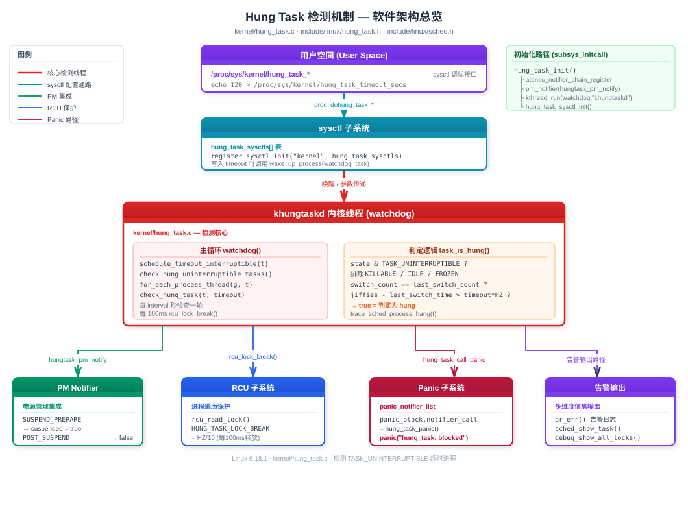
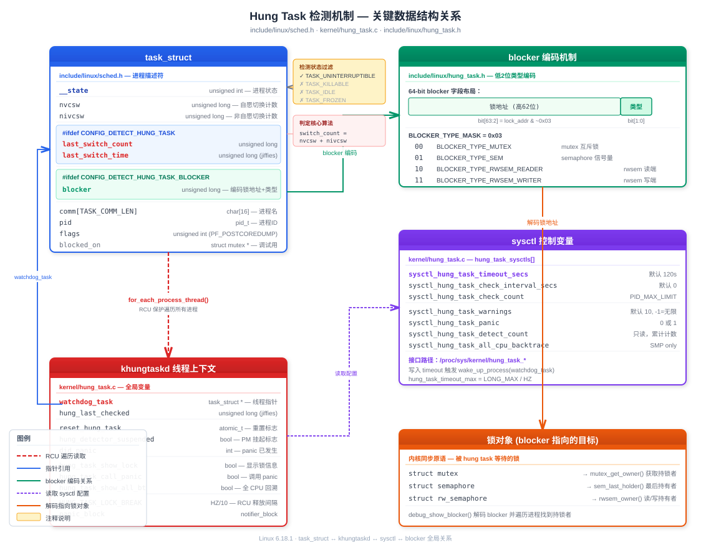

基于 Linux 6.18.1 内核源码（kernel/hung_task.c、include/linux/hung_task.h、include/linux/sched.h）
Hung task 检测器的核心使命：发现长时间处于 TASK_UNINTERRUPTIBLE（D 状态）而未被调度的任务，并发出告警或触发 panic。
在正常的内核运行中，进程进入 D 状态是为了等待不可中断的 I/O 操作（如磁盘读写），通常在毫秒级别就会返回。当一个进程在 D 状态停留超过 120 秒（默认值），几乎可以确定内核存在 bug——可能是死锁、驱动异常或资源泄漏。

| 文件 | 作用 |
|---|---|
kernel/hung_task.c |
检测器完整实现：khungtaskd 线程、判定逻辑、sysctl 接口 |
include/linux/hung_task.h |
blocker 类型定义、辅助函数（hung_task_set_blocker 等） |
include/linux/sched.h |
task_struct 中 last_switch_count/last_switch_time/blocker 字段 |
lib/Kconfig.debug |
CONFIG_DETECT_HUNG_TASK 等编译选项 |
CONFIG_DETECT_HUNG_TASK # 主开关，依赖 DEBUG_KERNEL
CONFIG_DEFAULT_HUNG_TASK_TIMEOUT # 默认超时（秒），默认 120
CONFIG_BOOTPARAM_HUNG_TASK_PANIC # 启动时即 panic on hung task
CONFIG_DETECT_HUNG_TASK_BLOCKER # 输出阻塞者（持锁任务）堆栈源码位置：lib/Kconfig.debug 第 1230–1290 行
/* include/linux/sched.h */
struct task_struct {
/* ... */
unsigned long nvcsw; /* 自愿上下文切换计数 */
unsigned long nivcsw; /* 非自愿上下文切换计数 */
#ifdef CONFIG_DETECT_HUNG_TASK
unsigned long last_switch_count; /* 上次检测时的 nvcsw+nivcsw */
unsigned long last_switch_time; /* 上次切换时的 jiffies */
#endif
#ifdef CONFIG_DETECT_HUNG_TASK_BLOCKER
unsigned long blocker; /* 编码后的锁地址 + 阻塞类型 */
#endif
/* ... */
};三组关键字段：
| 字段 | 类型 | 含义 |
|---|---|---|
nvcsw |
unsigned long |
累计自愿上下文切换次数（voluntary context switch） |
nivcsw |
unsigned long |
累计非自愿上下文切换次数（involuntary context switch） |
last_switch_count |
unsigned long |
khungtaskd 上次检查时记录的 nvcsw + nivcsw |
last_switch_time |
unsigned long |
上次发生切换的 jiffies 时间戳 |
blocker |
unsigned long |
低 2 位编码锁类型，高位存储锁地址 |
blocker 字段利用锁地址的对齐特性（至少 4 字节对齐，低 2 位恒为 0），在低 2 位编码阻塞类型：
/* include/linux/hung_task.h */
#define BLOCKER_TYPE_MUTEX 0x00UL /* 00 - mutex */
#define BLOCKER_TYPE_SEM 0x01UL /* 01 - semaphore */
#define BLOCKER_TYPE_RWSEM_READER 0x02UL /* 10 - rwsem 读端 */
#define BLOCKER_TYPE_RWSEM_WRITER 0x03UL /* 11 - rwsem 写端 */
#define BLOCKER_TYPE_MASK 0x03UL编码/解码操作：
设置: blocker = lock_addr | type
取类型: type = blocker & BLOCKER_TYPE_MASK
取锁地址: lock_addr = blocker & ~BLOCKER_TYPE_MASK
示例：锁地址 0xFFFF0000DEAD0040，类型 mutex(0x00)
blocker = 0xFFFF0000DEAD0040 | 0x00 = 0xFFFF0000DEAD0040
示例：锁地址 0xFFFF0000DEAD0040，类型 rwsem_writer(0x03)
blocker = 0xFFFF0000DEAD0040 | 0x03 = 0xFFFF0000DEAD0043/* kernel/hung_task.c 中的全局变量 */
static int sysctl_hung_task_check_count; /* 每轮最多检查任务数, 默认 PID_MAX_LIMIT */
static unsigned long sysctl_hung_task_detect_count; /* 累计检测到的 hung task 数（只读）*/
unsigned long sysctl_hung_task_timeout_secs; /* 超时阈值，默认 120 秒 */
static unsigned long sysctl_hung_task_check_interval_secs; /* 检查间隔, 0=同 timeout */
static int sysctl_hung_task_warnings; /* 剩余告警次数, 默认 10 */
static unsigned int sysctl_hung_task_panic; /* 是否 panic, 0 或 1 */
static unsigned int sysctl_hung_task_all_cpu_backtrace; /* 是否 dump 所有 CPU 回溯 */对应 /proc/sys/kernel/ 下的文件：
| sysctl 路径 | 变量 | 默认值 | 权限 | 说明 |
|---|---|---|---|---|
hung_task_timeout_secs |
sysctl_hung_task_timeout_secs |
120 | 0644 | 超时阈值（0=禁用） |
hung_task_check_interval_secs |
sysctl_hung_task_check_interval_secs |
0 | 0644 | 检测间隔（0=同 timeout） |
hung_task_check_count |
sysctl_hung_task_check_count |
PID_MAX_LIMIT | 0644 | 每轮最大检查数 |
hung_task_warnings |
sysctl_hung_task_warnings |
10 | 0644 | 剩余告警次数（-1=无限） |
hung_task_panic |
sysctl_hung_task_panic |
0 | 0644 | 检测到 hung 时是否 panic |
hung_task_detect_count |
sysctl_hung_task_detect_count |
0 | 0444 | 累计 hung 次数（只读） |
hung_task_all_cpu_backtrace |
sysctl_hung_task_all_cpu_backtrace |
0 | 0644 | 是否 dump 所有 CPU（SMP） |

khungtaskd 是整个机制的驱动核心，在 subsys_initcall 阶段启动：
static int __init hung_task_init(void)
{
atomic_notifier_chain_register(&panic_notifier_list, &panic_block);
pm_notifier(hungtask_pm_notify, 0); /* 注册电源管理回调 */
watchdog_task = kthread_run(watchdog, NULL, "khungtaskd");
hung_task_sysctl_init(); /* 注册 sysctl 接口 */
return 0;
}
subsys_initcall(hung_task_init);watchdog() 函数是线程主循环：
static int watchdog(void *dummy)
{
unsigned long hung_last_checked = jiffies;
set_user_nice(current, 0); /* nice=0, 普通优先级 */
for ( ; ; ) {
unsigned long timeout = sysctl_hung_task_timeout_secs;
unsigned long interval = sysctl_hung_task_check_interval_secs;
long t;
if (interval == 0)
interval = timeout; /* 间隔默认等于超时 */
interval = min_t(unsigned long, interval, timeout);
t = hung_timeout_jiffies(hung_last_checked, interval);
if (t <= 0) {
if (!atomic_xchg(&reset_hung_task, 0) && /* 未被重置 */
!hung_detector_suspended) /* 未在 suspend */
check_hung_uninterruptible_tasks(timeout);
hung_last_checked = jiffies;
continue;
}
schedule_timeout_interruptible(t); /* 可中断睡眠 */
}
}关键设计点：
set_user_nice(current, 0)：不需要高优先级，正常调度即可schedule_timeout_interruptible(t)：可中断睡眠，支持被 sysctl 写入唤醒atomic_xchg(&reset_hung_task, 0)：检查并清除重置标志，防止误报（如 debug 工具主动重置）这是最核心的判定函数，用 "切换计数 + 时间窗口"双重检测：
static bool task_is_hung(struct task_struct *t, unsigned long timeout)
{
unsigned long switch_count = t->nvcsw + t->nivcsw;
unsigned int state = READ_ONCE(t->__state);
/* 排除不需要检测的状态 */
if (!(state & TASK_UNINTERRUPTIBLE) ||
(state & (TASK_WAKEKILL | TASK_NOLOAD | TASK_FROZEN)))
return false;
/* 从未被调度过的新进程，跳过 */
if (unlikely(!switch_count))
return false;
/* 切换计数有变化 → 进程被调度过，刷新记录 */
if (switch_count != t->last_switch_count) {
t->last_switch_count = switch_count;
t->last_switch_time = jiffies;
return false;
}
/* 切换计数未变，但还没超时 */
if (time_is_after_jiffies(t->last_switch_time + timeout * HZ))
return false;
return true; /* 判定为 hung */
}状态过滤逻辑详解：
进程状态 是否检测 原因
───────────────────────────────────────────────
TASK_RUNNING 否 正在运行/可运行
TASK_INTERRUPTIBLE 否 可被信号唤醒
TASK_UNINTERRUPTIBLE 是 ← 唯一检测目标
TASK_KILLABLE 否 WAKEKILL 位排除
TASK_IDLE 否 NOLOAD 位排除
TASK_FROZEN 否 FROZEN 位排除（freezer 合理冻结）判定流程（一图胜千言）：
进入 task_is_hung(t, timeout)
│
┌───────────▼───────────┐
│ state 是 D 状态？ │──否──→ return false
│ 排除 KILLABLE/IDLE/ │
│ FROZEN? │
└───────────┬───────────┘
│是
┌───────────▼───────────┐
│ switch_count == 0 ? │──是──→ return false
│ (从未被调度过) │ (新建进程)
└───────────┬───────────┘
│否
┌───────────▼───────────┐
│ switch_count != │──是──→ 更新 last_switch_count
│ last_switch_count ? │ 更新 last_switch_time
│ (发生过切换) │ return false
└───────────┬───────────┘
│否(计数相同)
┌───────────▼───────────┐
│ jiffies < last_time │──是──→ return false
│ + timeout * HZ ? │ (还没超时)
└───────────┬───────────┘
│否
▼
return true ← 判定 hung!当 task_is_hung() 返回 true 时的处理：
static void check_hung_task(struct task_struct *t, unsigned long timeout)
{
if (!task_is_hung(t, timeout))
return;
sysctl_hung_task_detect_count++; /* 累计计数 */
trace_sched_process_hang(t); /* tracepoint 事件 */
if (sysctl_hung_task_panic) {
console_verbose(); /* 提升 console 日志级别 */
hung_task_show_lock = true;
hung_task_call_panic = true;
}
if (sysctl_hung_task_warnings || hung_task_call_panic) {
if (sysctl_hung_task_warnings > 0)
sysctl_hung_task_warnings--; /* 递减告警计数 */
/* 打印 hung task 告警信息 */
pr_err("INFO: task %s:%d blocked for more than %ld seconds.\n",
t->comm, t->pid, (jiffies - t->last_switch_time) / HZ);
pr_err(" %s %s %.*s\n", print_tainted(), ...);
if (t->flags & PF_POSTCOREDUMP)
pr_err(" Blocked by coredump.\n");
sched_show_task(t); /* 打印任务堆栈 */
debug_show_blocker(t, timeout); /* 打印阻塞者信息 */
}
touch_nmi_watchdog(); /* 防止 NMI watchdog 误报 */
}输出示例：
INFO: task modprobe:1234 blocked for more than 120 seconds.
Tainted: G OE 6.18.1 #1
"echo 0 > /proc/sys/kernel/hung_task_timeout_secs" disables this message.
task:modprobe state:D stack:12345 pid:1234 tgid:1234 ...
Call trace:
__schedule+0x2c4/0x700
schedule+0x3c/0xd0
schedule_preempt_disabled+0x14/0x20
__mutex_lock+0x374/0x5b0
...
INFO: task modprobe:1234 is blocked on a mutex likely owned by task kworker:5678.遍历所有进程线程需要在 RCU 读端临界区中进行。但长时间持有 RCU 读锁会延迟 grace period，影响整个系统。内核用 分段锁 策略解决：
#define HUNG_TASK_LOCK_BREAK (HZ / 10) /* 每 100ms 打断一次 */
static void check_hung_uninterruptible_tasks(unsigned long timeout)
{
unsigned long last_break = jiffies;
struct task_struct *g, *t;
rcu_read_lock();
for_each_process_thread(g, t) {
if (!max_count--)
goto unlock;
/* 每 100ms 释放一次 RCU 锁，让其他 RCU 回调有机会执行 */
if (time_after(jiffies, last_break + HUNG_TASK_LOCK_BREAK)) {
if (!rcu_lock_break(g, t))
goto unlock; /* 进程已退出，停止遍历 */
last_break = jiffies;
}
check_hung_task(t, timeout);
}
unlock:
rcu_read_unlock();
/* ... */
}rcu_lock_break() 的实现：
static bool rcu_lock_break(struct task_struct *g, struct task_struct *t)
{
get_task_struct(g); /* 增加引用计数，防止释放 */
get_task_struct(t);
rcu_read_unlock(); /* 释放 RCU 读锁 */
cond_resched(); /* 让出 CPU */
rcu_read_lock(); /* 重新获取 RCU 读锁 */
can_cont = pid_alive(g) && pid_alive(t); /* 检查进程是否还活着 */
put_task_struct(t);
put_task_struct(g);
return can_cont;
}CONFIG_DETECT_HUNG_TASK_BLOCKER 启用后，内核在 mutex、semaphore、rwsem 的慢路径中调用 hung_task_set_blocker()，记录当前任务被哪把锁阻塞：
/* 加锁慢路径中（如 __mutex_lock_common）*/
hung_task_set_blocker(lock, BLOCKER_TYPE_MUTEX);
schedule_preempt_disabled(); /* 进入 D 状态等待 */
hung_task_clear_blocker(); /* 获得锁后清除 */当检测到 hung task 时，debug_show_blocker() 解码 blocker：
mutex_get_owner() / sem_last_holder() / rwsem_owner() 获取持锁者系统 suspend/resume 期间，许多进程会合理地长时间处于 D 状态。检测器通过 PM notifier 自动暂停：
static int hungtask_pm_notify(struct notifier_block *self,
unsigned long action, void *hcpu)
{
switch (action) {
case PM_SUSPEND_PREPARE:
case PM_HIBERNATION_PREPARE:
case PM_RESTORE_PREPARE:
hung_detector_suspended = true; /* 暂停检测 */
break;
case PM_POST_SUSPEND:
case PM_POST_HIBERNATION:
case PM_POST_RESTORE:
hung_detector_suspended = false; /* 恢复检测 */
break;
}
return NOTIFY_OK;
}系统启动
│
▼
hung_task_init() [subsys_initcall]
├── 注册 panic_notifier
├── 注册 pm_notifier (suspend 暂停检测)
├── kthread_run(watchdog) → 创建 khungtaskd
└── hung_task_sysctl_init() → 注册 /proc/sys/kernel/hung_task_*
│
▼
┌── watchdog() 主循环 ──────────────────────────┐
│ │
│ 计算 interval = min(check_interval, timeout) │
│ 计算剩余 jiffies t │
│ │ │
│ ├─ t > 0 → schedule_timeout_interruptible│
│ │ (可被 sysctl 写入唤醒) │
│ │ │
│ └─ t ≤ 0 → 是否 reset? suspended? │
│ │ │
│ ├─是→ 跳过本轮 │
│ │ │
│ └─否→ check_hung_uninterruptible_tasks()
│ │ │
│ ▼ │
│ rcu_read_lock() │
│ for_each_process_thread: │
│ │ │
│ ├─ 每100ms rcu_lock_break│
│ │ │
│ └─ check_hung_task(t): │
│ task_is_hung()? │
│ │ │
│ ┌──┴──┐ │
│ 否 是 │
│ │ trace + 告警 │
│ │ show_blocker │
│ │ 可能 panic │
│ │ │
│ rcu_read_unlock() │
│ debug_show_all_locks() │
│ trigger_all_cpu_backtrace() │
│ │
└────────────────────────────────────────────────┘# 启用 hung task 检测
CONFIG_DETECT_HUNG_TASK=y
# 默认超时 120 秒（可根据需要调整）
CONFIG_DEFAULT_HUNG_TASK_TIMEOUT=120
# 启用 blocker 追踪（推荐）
CONFIG_DETECT_HUNG_TASK_BLOCKER=y
# 检测到 hung task 时直接 panic（生产高可用场景）
# CONFIG_BOOTPARAM_HUNG_TASK_PANIC=y# 查看当前配置
sysctl -a | grep hung_task
# 调整超时时间为 60 秒（调试时缩短等待）
echo 60 > /proc/sys/kernel/hung_task_timeout_secs
# 禁用检测（设为 0）
echo 0 > /proc/sys/kernel/hung_task_timeout_secs
# 检测到 hung task 时 panic
echo 1 > /proc/sys/kernel/hung_task_panic
# 不限制告警次数
echo -1 > /proc/sys/kernel/hung_task_warnings
# 查看累计检测到的 hung task 数
cat /proc/sys/kernel/hung_task_detect_count
# 设置检查间隔为 30 秒（比 timeout 更频繁地检查）
echo 30 > /proc/sys/kernel/hung_task_check_interval_secs
# dump 所有 CPU 回溯（SMP 系统调试）
echo 1 > /proc/sys/kernel/hung_task_all_cpu_backtrace# 通过 bootargs 设置
hung_task_panic=1 # 等同于 CONFIG_BOOTPARAM_HUNG_TASK_PANIC| 场景 | 推荐配置 |
|---|---|
| 开发调试 | timeout=30, warnings=-1, panic=0 |
| 生产服务器 | timeout=120, panic=1, panic_timeout=30 |
| 嵌入式看门狗 | timeout=60, panic=1, panic_timeout=0（立即重启） |
| CI/CD 测试 | timeout=60, panic=0, all_cpu_backtrace=1 |
TASK_UNINTERRUPTIBLE（D 状态）意味着进程正在等待一个不可中断的内核操作完成。这种状态的特点：
kill -9 也无法终止正常情况下 D 状态是短暂的。当进程在 D 状态停留超过 120 秒，说明：
hung task 根因
│
├── 1. 锁相关问题
│ ├── 死锁：A 持锁等 B，B 持锁等 A
│ ├── 锁饥饿：高优先级任务长时间持锁
│ └── 锁被 hung 的持有者阻塞（链式阻塞）
│
├── 2. I/O 子系统问题
│ ├── 存储设备无响应（硬盘故障、NFS 服务器宕机）
│ ├── 块设备驱动 bug（请求丢失、完成回调未触发）
│ └── I/O 调度器异常
│
├── 3. 驱动程序 bug
│ ├── 未正确释放资源
│ ├── 中断处理错误导致唤醒丢失
│ └── 固件异常导致设备不响应
│
├── 4. 内存压力
│ ├── 内存回收路径阻塞
│ ├── OOM 处理过程中的锁竞争
│ └── writeback 路径等待 I/O 完成
│
└── 5. 其他内核 bug
├── 唤醒条件丢失（lost wakeup）
├── wait_queue 使用不当
└── coredump 阻塞（PF_POSTCOREDUMP）| 特性 | hung task | soft lockup | hard lockup |
|---|---|---|---|
| 检测目标 | D 状态进程 | 独占 CPU 不调度 | CPU 被锁死（中断也不响应） |
| 检测线程 | khungtaskd | watchdog/N (per-CPU) | NMI watchdog |
| 默认超时 | 120 秒 | 20 秒 | 10 秒 |
| 进程状态 | TASK_UNINTERRUPTIBLE | TASK_RUNNING（在内核态循环） | 任意（中断禁止） |
| CPU 是否空闲 | 是（进程让出了 CPU） | 否（CPU 被占满） | 否（CPU 完全卡死） |
| 能否响应中断 | 能 | 能 | 不能 |
| 触发 panic | 可选 | 可选 | 可选 |
ps 显示 D 状态# 确保内核编译选项开启
CONFIG_DETECT_HUNG_TASK=y
CONFIG_DEFAULT_HUNG_TASK_TIMEOUT=120
CONFIG_DETECT_HUNG_TASK_BLOCKER=y
CONFIG_MODULES=y
# 编译内核
make -j$(nproc)
# 启动 QEMU (arm64 示例)
qemu-system-aarch64 \
-machine virt \
-cpu cortex-a57 \
-nographic \
-kernel arch/arm64/boot/Image \
-append "console=ttyAMA0 root=/dev/vda rw" \
-drive file=rootfs.img,format=raw \
-m 1024编写一个内核模块，创建线程进入 D 状态并永远不唤醒：
/* hung_task_test.c */
#include <linux/module.h>
#include <linux/kthread.h>
#include <linux/delay.h>
#include <linux/sched.h>
static struct task_struct *test_thread;
static int hung_thread_fn(void *data)
{
pr_info("hung_task_test: entering D state...\n");
/* 设置为 TASK_UNINTERRUPTIBLE 并永远不唤醒 */
set_current_state(TASK_UNINTERRUPTIBLE);
schedule();
/* 不会执行到这里 */
return 0;
}
static int __init hung_task_test_init(void)
{
pr_info("hung_task_test: loading module\n");
test_thread = kthread_run(hung_thread_fn, NULL, "hung_test");
if (IS_ERR(test_thread))
return PTR_ERR(test_thread);
return 0;
}
static void __exit hung_task_test_exit(void)
{
pr_info("hung_task_test: unloading module\n");
/* 注意：hung 的线程无法被正常停止 */
}
module_init(hung_task_test_init);
module_exit(hung_task_test_exit);
MODULE_LICENSE("GPL");
MODULE_DESCRIPTION("Hung task detector test module");操作步骤：
# 缩短超时加速实验
echo 30 > /proc/sys/kernel/hung_task_timeout_secs
# 加载模块
insmod hung_task_test.ko
# 等待 30+ 秒后查看 dmesg
dmesg | grep -A 20 "blocked for more than"预期输出：
INFO: task hung_test:XXX blocked for more than 30 seconds.
Not tainted 6.18.1 #1
"echo 0 > /proc/sys/kernel/hung_task_timeout_secs" disables this message.
task:hung_test state:D stack:XXXX pid:XXX ...
Call trace:
__schedule+0x.../0x...
schedule+0x.../0x...
hung_thread_fn+0x.../0x...
kthread+0x.../0x...
ret_from_fork+0x.../0x...# 启用 panic on hung task
echo 1 > /proc/sys/kernel/hung_task_panic
# 设置 panic 后自动重启（10 秒后）
echo 10 > /proc/sys/kernel/panic
# 缩短超时
echo 30 > /proc/sys/kernel/hung_task_timeout_secs
# 加载测试模块
insmod hung_task_test.ko
# 30 秒后系统将 panic 并在 10 秒后重启预期输出：
INFO: task hung_test:XXX blocked for more than 30 seconds.
...
Kernel panic - not syncing: hung_task: blocked tasks
...编写模块让一个线程持锁不放，另一个线程等锁进入 D 状态：
/* hung_blocker_test.c */
#include <linux/module.h>
#include <linux/kthread.h>
#include <linux/mutex.h>
#include <linux/delay.h>
static DEFINE_MUTEX(test_mutex);
static struct task_struct *holder_thread;
static struct task_struct *waiter_thread;
/* 持锁线程：获取锁后进入 D 状态不释放 */
static int holder_fn(void *data)
{
mutex_lock(&test_mutex);
pr_info("blocker_test: holder got the lock, going to D state\n");
set_current_state(TASK_UNINTERRUPTIBLE);
schedule(); /* 永远不会醒来，锁不会释放 */
mutex_unlock(&test_mutex);
return 0;
}
/* 等锁线程：尝试获取被持有的锁，进入 D 状态 */
static int waiter_fn(void *data)
{
msleep(1000); /* 确保 holder 先获取锁 */
pr_info("blocker_test: waiter trying to get the lock\n");
mutex_lock(&test_mutex); /* 阻塞在这里 */
mutex_unlock(&test_mutex);
return 0;
}
static int __init blocker_test_init(void)
{
holder_thread = kthread_run(holder_fn, NULL, "lock_holder");
waiter_thread = kthread_run(waiter_fn, NULL, "lock_waiter");
return 0;
}
static void __exit blocker_test_exit(void)
{
pr_info("blocker_test: unloading\n");
}
module_init(blocker_test_init);
module_exit(blocker_test_exit);
MODULE_LICENSE("GPL");预期输出（含 blocker 信息）：
INFO: task lock_waiter:XXX blocked for more than 30 seconds.
...
INFO: task lock_waiter:XXX is blocked on a mutex likely owned by task lock_holder:YYY.
task:lock_holder state:D stack:XXXX pid:YYY ...
Call trace:
__schedule+0x.../0x...
schedule+0x.../0x...
holder_fn+0x.../0x...
...# 实时监控 hung task 检测次数
watch -n 1 cat /proc/sys/kernel/hung_task_detect_count
# 动态调整告警次数（设为无限）
echo -1 > /proc/sys/kernel/hung_task_warnings
# 动态缩短检查间隔
echo 10 > /proc/sys/kernel/hung_task_check_interval_secs
# 修改 timeout 会立即唤醒 khungtaskd
echo 20 > /proc/sys/kernel/hung_task_timeout_secs
# → proc_dohung_task_timeout_secs() 调用 wake_up_process(watchdog_task)答：hung task 是指在 TASK_UNINTERRUPTIBLE（D 状态）停留超过阈值（默认 120 秒）而未被调度的任务。内核通过 khungtaskd 线程周期性遍历所有进程，检测是否存在这种异常。D 状态本身是合法的（用于等待不可中断 I/O），但长时间停留通常意味着内核 bug（死锁、驱动故障、I/O 路径阻塞等）。
答：通过两阶段比较：
nvcsw + nivcsw（自愿+非自愿上下文切换总数），与上次记录的 last_switch_count 对比。如果有变化，说明进程被调度过，刷新记录并跳过。jiffies - last_switch_time 是否超过 timeout * HZ。超过则判定为 hung。这种双重检测避免了因单次检查时序问题导致的误报。
答：TASK_INTERRUPTIBLE 的进程可以被信号唤醒，用户可以通过 kill 终止它。即使长时间等待，也不构成"不可恢复"的问题。而 TASK_UNINTERRUPTIBLE 的进程无法响应任何信号（包括 SIGKILL），如果等待条件永远无法满足，进程将永久卡死，这才是需要检测的真正问题。
答：不会。TASK_KILLABLE 定义为 TASK_WAKEKILL | TASK_UNINTERRUPTIBLE。在 task_is_hung() 中会检查：
if (state & (TASK_WAKEKILL | TASK_NOLOAD | TASK_FROZEN))
return false;TASK_WAKEKILL 位被排除，因为这类进程虽然不响应普通信号，但可以被 fatal signal（如 SIGKILL）唤醒，不会真正"hung"住。
答：
| 维度 | hung task | soft lockup | hard lockup |
|---|---|---|---|
| 症状 | 进程睡眠不醒 | CPU 在内核态死循环 | CPU 连中断都不响应 |
| CPU 状态 | 空闲（进程已让出） | 被占满 | 完全锁死 |
| 检测机制 | khungtaskd 遍历进程 | per-CPU watchdog 线程 | NMI watchdog |
| 超时 | 120s | 20s | 10s |
| 根因 | 锁竞争/IO阻塞 | 内核代码无限循环 | 禁中断代码死循环 |
核心区别：hung task 中进程是主动让出 CPU 等待唤醒的，CPU 本身是正常的；而 lockup 是 CPU 被占用 无法执行其他任务。
答：遍历所有进程线程在 rcu_read_lock() 保护下进行。长时间持有 RCU 读锁会导致：
因此每隔 HUNG_TASK_LOCK_BREAK（100ms）就释放一次 RCU 读锁，调用 cond_resched() 让出 CPU，然后重新获取锁继续遍历。通过 get_task_struct() 增加引用计数防止遍历中的进程被释放。
答：利用锁指针的自然对齐特性（至少 4 字节对齐，低 2 位恒为 0），将锁地址和阻塞类型编码在一个 unsigned long 中：
00=mutex，01=semaphore，10=rwsem 读端，11=rwsem 写端）设置时 blocker = lock_addr | type，解码时 type = blocker & 0x03，lock = blocker & ~0x03。如果锁地址不对齐（低位非零），则静默跳过该锁的追踪。
答：
iostat、blktrace 确认存储设备是否正常/proc/lock_stat、debug_show_all_locks() 输出分析死锁hung_task_panic=1 + panic_timeout=N 实现自动重启恢复答：通过 PM notifier 机制自动管理。在 PM_SUSPEND_PREPARE/PM_HIBERNATION_PREPARE 时设置 hung_detector_suspended = true，暂停检测。在 PM_POST_SUSPEND/PM_POST_HIBERNATION 时恢复。这是因为 suspend 过程中很多进程会合法地长时间处于 D 状态（等待设备 suspend 完成），不应误报。
答：
| 判断因素 | 真正 hung | 合理等待 |
|---|---|---|
| 堆栈位置 | 锁等待/死锁点 | NFS/网络 I/O 等待 |
| 是否可恢复 | 条件永远无法满足 | 等待外部事件（如网络恢复） |
| 影响范围 | 连锁阻塞其他进程 | 仅影响自身 |
对于合理的长时间等待（如 NFS 挂载点网络断开），应：
TASK_KILLABLE 替代 TASK_UNINTERRUPTIBLE（允许 kill 终止）hung_task_timeout_secsreset_hung_task_detector() 重置检测计时器源码参考：
-kernel/hung_task.c— 完整检测器实现
-include/linux/hung_task.h— blocker 类型定义和辅助函数
-include/linux/sched.h— task_struct 中 hung task 相关字段
-lib/Kconfig.debug— 编译配置选项